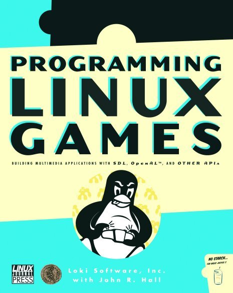

Les Documents a consulter,
LES DOCUMENTS DE REFERENCE A PROPOS DE L'UTILISATION DE SDL :
1) Programming Linux Games, par Loki Sofware, Inc. et John R.Hall
This is a complete guide to developing 2D Linux games, written by the Linux gaming experts. It discusses important multimedia toolkits (including a very thorough discussion of the Simple DirectMedia Layer) and teaches the basics of Linux game programming. Readers will learn about the state of the Linux gaming world, and how to write and distribute Linux games to the Linux gaming community. One should notice however, that this book doesn't discuss 3D game programming.
Cliquez sur la couverture du livre pour le telecharger.
2) SDL Game Development, par Shaun Ross Mitchell
SDL 2.0 is the latest release of the popular Simple DirectMedia Layer API, which is designed to make life easier for C++ developers, allowing you simple low-level access to various multiplatform audio, graphics, and input devices. SDL Game Development guides you through creating your first 2D game using SDL and C++. It takes a clear and practical approach to SDL game development, ensuring that the focus remains on creating awesome games.
Cliquez sur la couverture du livre pour le telecharger.
3) SDL Library Documentation, redige par un groupe des auteurs.
SDLdoc (The SDL Documentation Project) was formed to completely rewrite the SDL documentation and to keep it continually up to date. The team consists completely of volunteers ranging from people working with SDL in their spare time to people who use SDL in their everyday working lives. The latest version of this documentation can always be found at the project homepage: http://sdldoc.sourceforge.net.
Cliquez ici pour le telecharger.
Merry Christmas and Happy New Year